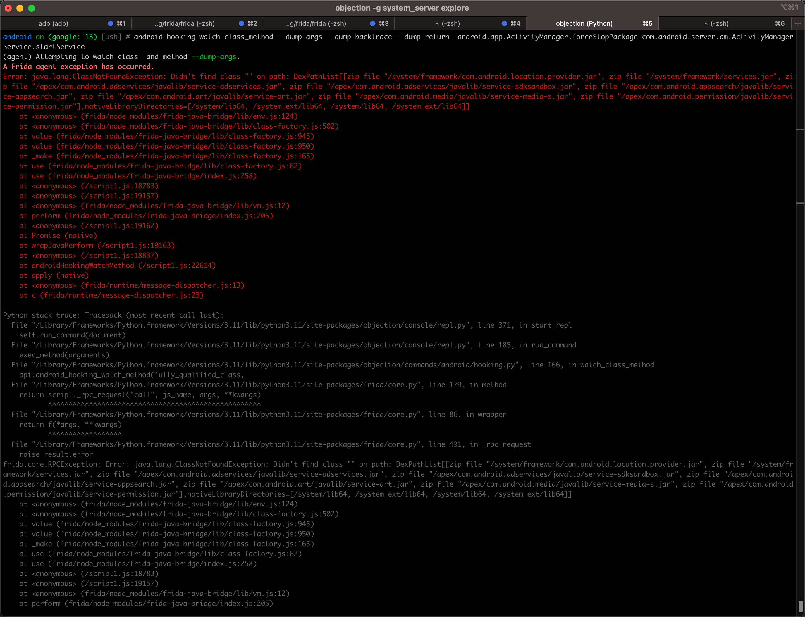

调试安卓常见问题
hook安卓函数
Attempting to watch class and method --dump-args A Frida agent exception has occurred
- 现象
尝试去hook安卓函数：
android hooking watch class_method --dump-args --dump-backtrace --dump-return android.app.ActivityManager.forceStopPackage com.android.server.am.ActivityManagerService.startService
结果报错：

android on (google: 13) [usb] # android hooking watch class_method --dump-args --dump-backtrace --dump-return android.app.ActivityManager.forceStopPackage com.android.server.am.ActivityManager
Service.startService
(agent) Attempting to watch class and method --dump-args.
A Frida agent exception has occurred.
Error: java.lang.ClassNotFoundException: Didn't find class "" on path: DexPathList[[zip file "/system/framework/com.android.location.provider.jar", zip file "/system/framework/services.jar", zip file "/apex/com.android.adservices/javalib/service-adservices.jar", zip file "/apex/com.android.adservices/javalib/service-sdksandbox.jar", zip file "/apex/com.android.appsearch/javalib/service-appsearch.jar", zip file "/apex/com.android.art/javalib/service-art.jar", zip file "/apex/com.android.media/javalib/service-media-s.jar", zip file "/apex/com.android.permission/javalib/service-permission.jar"],nativeLibraryDirectories=[/system/lib64, /system_ext/lib64, /system/lib64, /system_ext/lib64]]
at <anonymous> (frida/node_modules/frida-java-bridge/lib/env.js:124)
at <anonymous> (frida/node_modules/frida-java-bridge/lib/class-factory.js:502)
at value (frida/node_modules/frida-java-bridge/lib/class-factory.js:945)
at value (frida/node_modules/frida-java-bridge/lib/class-factory.js:950)
at _make (frida/node_modules/frida-java-bridge/lib/class-factory.js:165)
at use (frida/node_modules/frida-java-bridge/lib/class-factory.js:62)
at use (frida/node_modules/frida-java-bridge/index.js:258)
at <anonymous> (/script1.js:18783)
at <anonymous> (/script1.js:19157)
at <anonymous> (frida/node_modules/frida-java-bridge/lib/vm.js:12)
at perform (frida/node_modules/frida-java-bridge/index.js:205)
at <anonymous> (/script1.js:19162)
at Promise (native)
at wrapJavaPerform (/script1.js:19163)
at <anonymous> (/script1.js:18837)
at androidHookingWatchMethod (/script1.js:22614)
at apply (native)
at <anonymous> (frida/runtime/message-dispatcher.js:13)
at c (frida/runtime/message-dispatcher.js:23)
- 原因：
- 有2处
- 不能同时hook 2个类的函数
- 函数的hook参数的位置方面的语法错误
- 细节：
- 报错信息
Attempting to watch class and method --dump-args.Error: java.lang.ClassNotFoundException: Didn't find class "" on path ...
- 中的
class and的class和and中间其实有个空格Didn't find class ""中的""，也是指的是，类名是空字符串""
- 对于类名是空字符串，当然报错找不到了
- 报错信息
- 细节：
- 有2处
- 解决办法：
- 单次只hook 1个函数
- 改为正确的语法 -> 要把hook函数的
--dump-args等参数，放在类的函数的最后才行- 详见：hook函数的参数
具体步骤：改为
android hooking watch class_method android.app.ActivityManager.forceStopPackage --dump-args --dump-backtrace --dump-return android hooking watch class_method com.android.server.am.ActivityManager --dump-args --dump-backtrace --dump-return